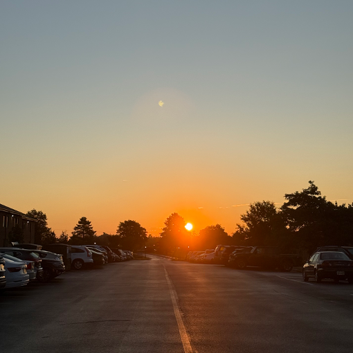
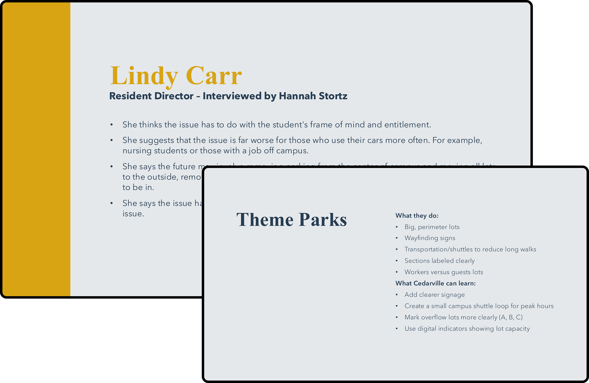
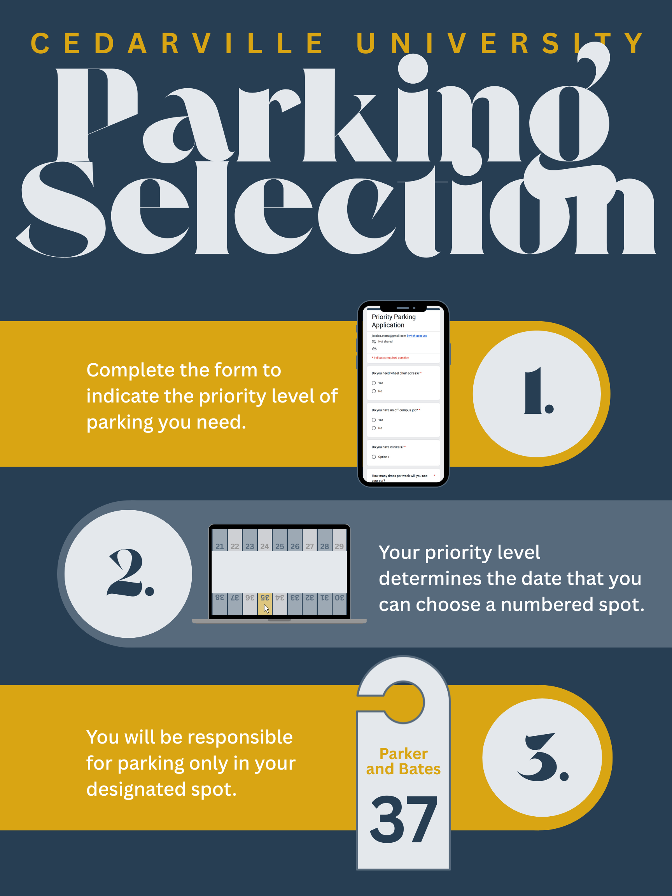

Ethnographic
Parking Project
Project Overview
For this ethnographic group project, we considered the issue of on-campus parking at Cedarville University. Through interviews, a student survey, observations, and other research methods, we sought to understand the frustrations of both residential students and commuters and develop a solution based on their needs.
Design Challenge
Our research revealed that mindset, distance, and fairness were recurring issues. In our survey, 67% of students reported difficulty finding parking nearest to their dorm, and 72% believed parking spots were not fairly allocated across dorms. While some interviewees pointed to students’ expectations of close parking, we also found that students with clinicals or off-campus jobs had important reasons to need their cars nearby. The challenge was to address these different needs while making it clear where students could park.


Approach
We began by interviewing students, a Resident Assistant, a Resident Director, and Campus Security to gain a range of perspectives. I interviewed the Resident Director, created the student survey, and developed a problem map to explore who, what, when, where, why, and how. Comparing parking spaces with the number of residents also helped us understand how uneven parking availability was across dorms.
As a group, we used observations, experience diagrams, stakeholder mapping, and persona profiles to better understand students’ needs. We also considered how theme parks, airports, and tech campuses address parking before using round robin to generate potential solutions.
Outcome
Ultimately, we selected a system that would prioritize parking based on how frequently students need their cars, with upperclassmen choosing first among students with similar usage. We created a storyboard explaining how students would apply, receive a selection date, and choose a reserved spot on a campus map.
I then designed the concept poster to explain the solution and the steps students would take. The proposed system aimed to clarify parking expectations, reduce the need for residential students to use commuter spaces, and reduce traffic from searching for open spots.
